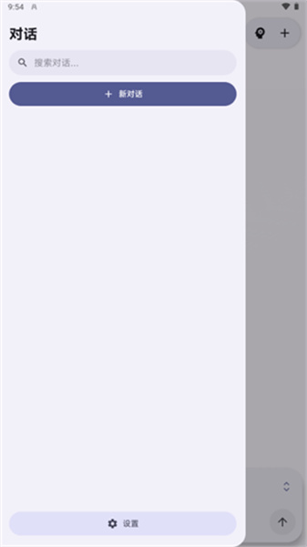

Agora 里藏得最深的五个开关，我翻了三周才摸透
从 ChatGPT 对话直接导入到 Anthropic 缓存五档切换，这些功能官网不写、菜单藏在二级三级，摸清楚能省不少事。
你以为 Agora官网 宣传的 Agora 就是一个装在手机上的 AI 聊天壳子？拉下来对话抽屉、配个 API 密钥、开聊——这是 90% 的人停步的地方。但我这三周把设置翻了个底朝天，发现它藏的东西比表面多得多。有些功能藏在三级菜单里，有些开关只有特定协议的提供商才会出现，官方手册提了一句就没下文。今天把这些冷门但真能用的整理出来。
第一个：ChatGPT 和 Claude 的对话记录能直接搬进来
这个功能让我第一次觉得 Agora 不只是个聊天客户端——它把「从其他 AI 服务搬家」做成了一级功能，而且支持直接吃两家的官方导出 ZIP。
操作路径：设置 → 数据控制 → 导入，选「ChatGPT 导出文件」或「Claude 导出文件」，直接把对方官网拿到的 ZIP 扔进去。应用会先预览对话列表让你勾选要搬哪些，然后选合并还是替换模式——不是那种无脑覆盖的粗暴导入。
说几个细节：
- 不用任何格式转换脚本，ZIP 拆包、解析、入库全是内置的；
- Claude 导出里的附件可能只有元数据没有原始文件字节，这是 Claude 自己导出的限制，不是 Agora 丢了；
- 导入进度条走完前别退出应用，这个过程不可中途取消，我试过一次中途切出去再回来就白跑了。
搬完之后原来的标题会保留，配合自动标题功能可以重新归纳整理。对那种「GPT 用了一年、现在想搬家又舍不得历史对话」的人来说，这一条就值回票价。还没装的话去官方下载拿最新版本就行。
第二个：Anthropic 协议下的缓存开关，藏在 Advanced 里
如果你用的是内置 Anthropic 提供商，或者任何走 Anthropic 协议的自定义提供商，打开 设置 → Providers → 选中提供商 → Advanced，里面有一个 Cache 开关和 Cache Duration 下拉。其他协议的提供商（比如 OpenAI 兼容）没有这块——切协议的话控件会隐藏但数值保留，改回来还在。
这个开关控制什么？Anthropic 服务端支持提示缓存：把长系统提示词、长文档等固定前缀缓存起来，后续请求命中部分按更低价格计费。Agora 的 Cache 开关决定请求里带不带顶层缓存控制标记。
两个档位：
- 5 分钟：短缓存，适合一次性密集对话，比如几分钟内连续追问同一个长文档；
- 1 小时：默认选项，长缓存，适合系统提示词很大、一整天断断续续用同一前缀的场景。
但这里有个容易踩的坑：走中转服务的时候要关掉它。中转如果自己已经在管理缓存（很多中转服务会自动打缓存标记），你再加一层标记可能互相干扰，反而省不了钱甚至出问题。判断口诀很简单——直连官方就开，走中转看中转说明里有没有提它管缓存，不确定就保持默认的开 + 1h，至少不会让请求失败。
第三个：.agora 归档，一份 ZIP 带走全部数据
设置 → 数据控制 → 导出 产出的 .agora 文件其实是一个版本化 ZIP 归档（当前格式版本 4），是 Agora 的通用数据容器——备份、换机、迁移到新手机都靠它。
归档里能装的东西按类别勾选：对话、任务运行、消息图结构、附件媒体、活跃记忆与技能、系统提示词、应用设置甚至自定义字体。但 API 密钥和其他敏感值只有在明确勾选时才会被包含。
我后来去Agora文档翻了一下才注意到，它用加粗警告标出的红线：归档内的密钥是明文存放的。实用结论很直接：
- 只备份对话 → 不要勾密钥，风险为零；
- 确实要连密钥一起迁移 → 这个文件必须妥善保管，传输走可信通道，用完即删。我建议只在换机当天用一次，导入完立刻删除归档文件。
导入是全然对称的——新设备上选导入 .agora 文件，应用会先加载预览列出包里有哪些类别，然后按类别逐项选择处理方式（合并、替换还是跳过）。版本不兼容的归档会明确报错并禁用导入按钮，不会出现导进一半的尴尬状态。

第四个：导入时的合并、替换、跳过三模式
这条跟第一个功能配套，但藏得更深——在导入 .agora 文件或 ChatGPT/Claude 导出时，选完要搬的对话之后会弹出模式选择框，三个选项的区别很多人搞不清楚：
- 合并：同名对话会合并成一条分支，保留两边的消息；
- 替换：同名对话用导入的版本覆盖本地已有的；
- 跳过：同名对话不动，只导入本地没有的新对话。
如果你是第一次搬家，推荐用跳过——先把增量对话导进来看看，不会误伤本地已经整理好的内容。如果是大版本迁移或彻底换机，用替换比较干净。
第五个：导入过程的静默边界
最后一个不是什么功能，是一个官方不怎么提的行为边界——导入进度条走完前，应用处于一种「半锁定」状态：
- 前台 UI 还能点，但任何新对话都排队等待；
- 后台生成、自动备份等定时任务会暂停；
- 某些机型上通知权限没开的话，进度完全靠屏幕上的小条指示，熄屏了就不知道跑到哪了。
所以我的习惯是：导入前先开通知权限、插上电源、别熄屏、别切出应用。一次完整导入大概几分钟到十几分钟不等，耐心等就好。
写在最后
Agora 的设置菜单做了分区但没做「高级选项」折叠——所有东西都摊在那里，但很多功能只在特定条件下才会出现（比如那个 Cache 开关只有 Anthropic 协议才显示）。用了它三个月，我觉得它的设计思路其实是「默认给你够用的，真要折腾自己找」。
把这些隐藏功能摸透之后，搬家省了手动复制的麻烦、缓存开关调对了每个月省点 token 钱、归档备份在大版本更新前跑一次再也不怕丢数据。顺便说一句，这套折腾笔记我同步放在了GitHub、Gitee 和 GitCode，怕忘的可以收藏一份。如果你也是把软件底朝天翻的那种人，Agora 值得你花一个周末挖一挖。